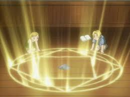

Alquimia
La alquimia en Fullmetal Alchemist: Brotherhood es una ciencia mística que permite transformar la materia mediante el uso de círculos de transmutación y el principio del intercambio equivalente:
"Para obtener algo, se debe dar algo de igual valor."
Es el sistema principal que rige la realidad en el país de Amestris, y está basado en conceptos reales de la alquimia antigua, pero adaptados al contexto del anime con una mezcla de ciencia, magia y filosofía.
Descripcion
Tal y como se entiende en la serie, la alquimia es la antigua ciencia mística del arte de manipular y alterar la materia mediante el uso de la energía natural.
Este acto se conoce como "transmutación" y su secuencia se describe como:
Comprensión
Destrucción
Reconstrucción
Comprender la estructura y las propiedades inherentes de la composición atómica o molecular del material que se transmuta, como el flujo y equilibrio de la energía cinética y potencial en su interior.
Uso de energía para romper la estructura física del material identificado en un estado más maleable con el fin de ser fácilmente reconfigurado en una nueva forma.
Continuando con el flujo de energía a fin de reformar el material a una nueva forma.